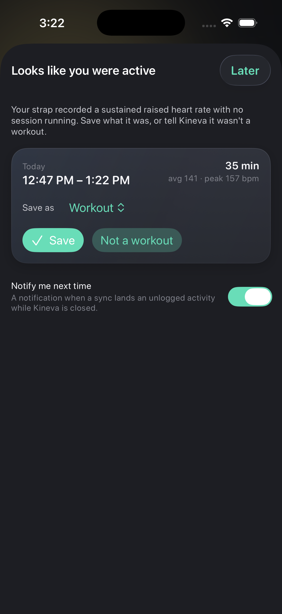
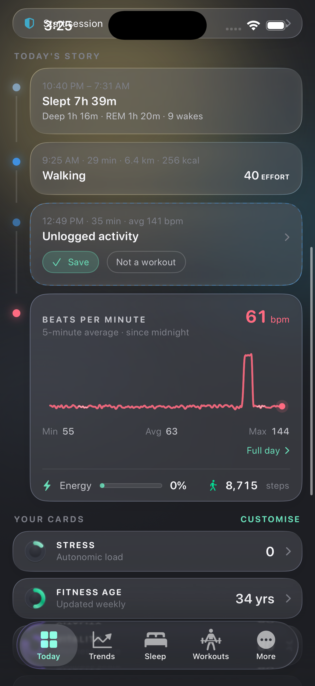
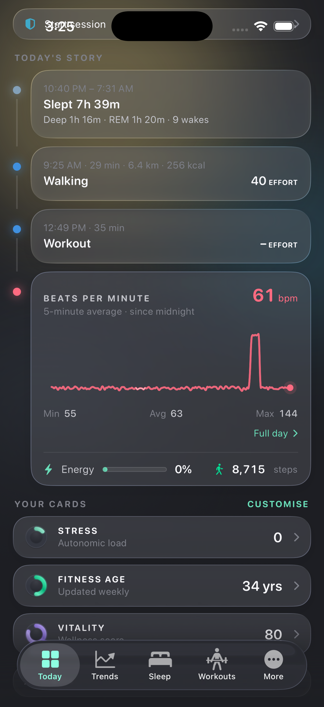

Unlogged activity — build 206, simulator, demo data
The demo seed now includes two days of raw heart rate with one 35-minute raised window that overlaps no saved session. On first open the prompt appears; Later leaves the window on the timeline; Save turns it into a Workout event.

First open: "Looks like you were active" with Save / Not a workout and a sport picker

After Later: dashed "Unlogged activity" event in clock order

After Save: a Workout event; Effort fills on the next scoring pass